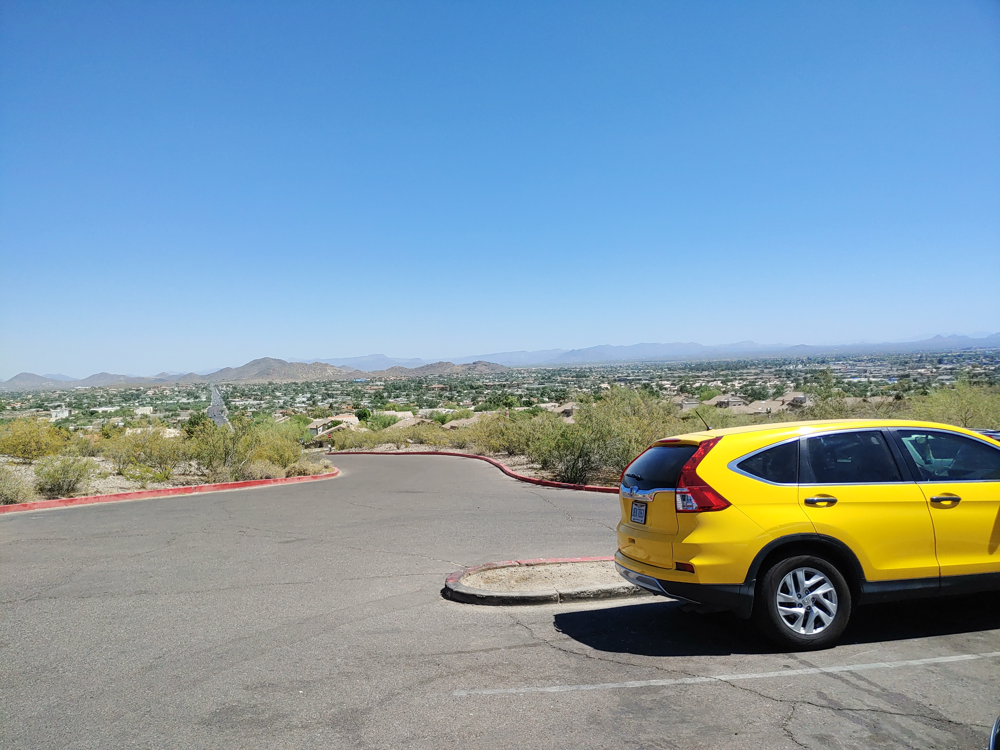
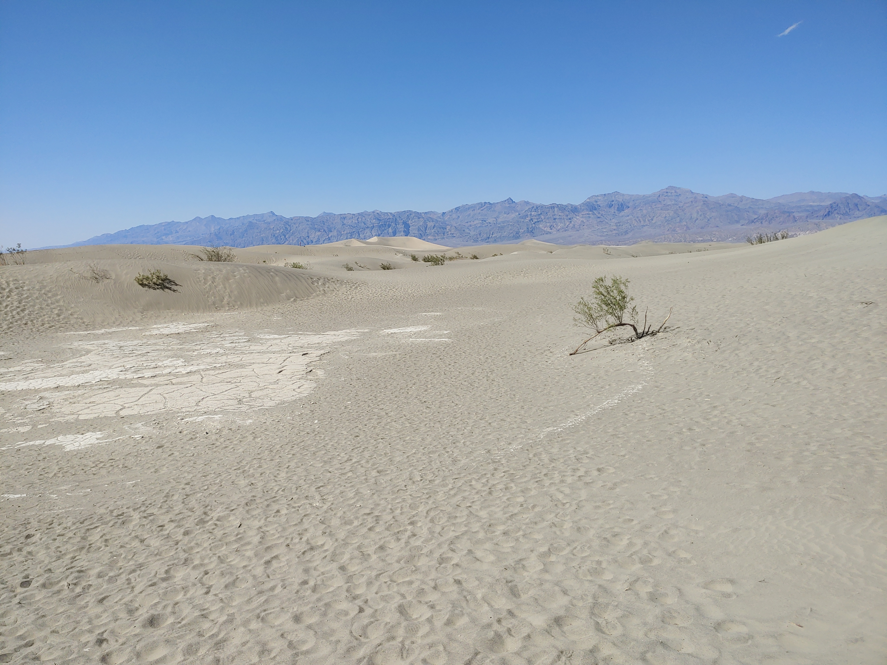
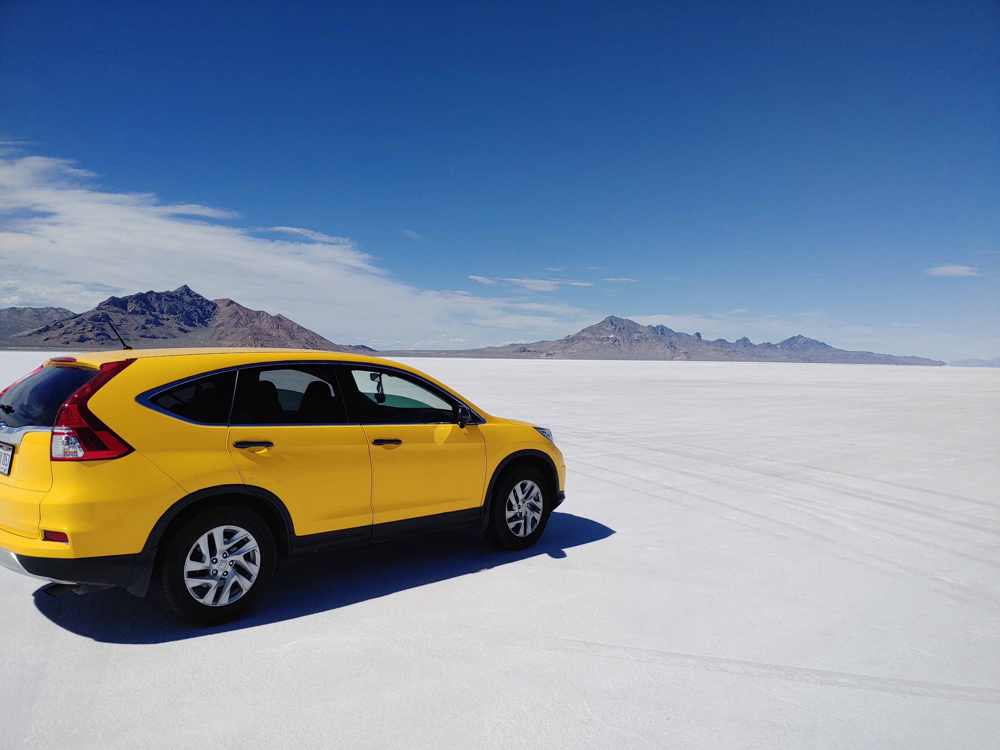
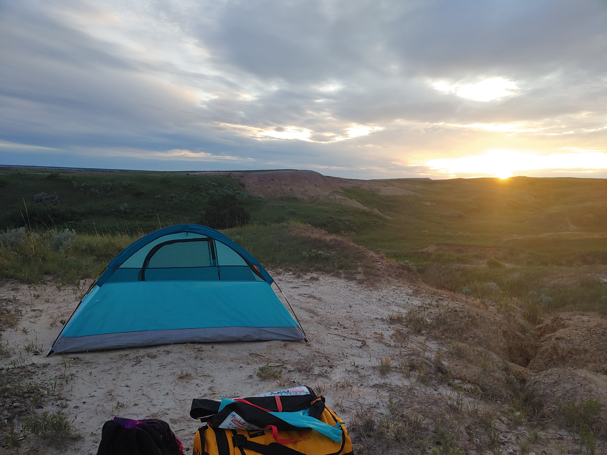
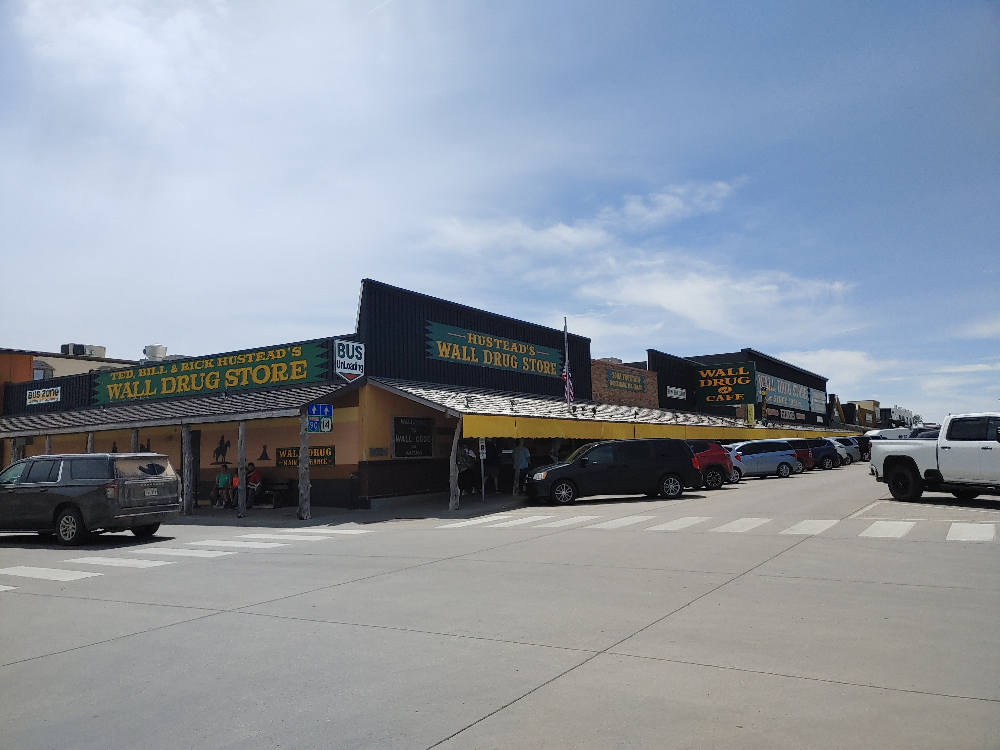

Texas
I'm traveling the country, stopping at certain cities for a while, and chronicling tidbits of that journey here.
My starting point was Plano. This is my car parking in a rest area somewhere in west Texas.

Las Cruces

The crosses. Almost like crossroads. As if once you cross there's no turning back. I feel like I'm again and again taken to this spot in my life. Where I must make a decision but both options are wrong.

But that's what makes the Organ Mountains so beautiful. Very difficult hike, 5.5 hours after the losing the trail several times. Did not bring food, almost ran out of energy, but managed to stumble down to the base.
Phoenix
The bird that revives. The byproduct of that heat resulted in the sunshine state. I'm kidding.

There's something charming about building a city in the desert. Also, did not expect to spend almost 2 hours in a laundromat. Got what looked like bed bug bites after staying at an AirBnb. Laundered everything just in case.
L.A. - Riverside, Pomona
LA is BIG, but I stayed in two cities in East LA while driving throughout the metro. I've gotten into the trend of hiking a different mountain every day.

There's an unexpected pleasant air in the city of [fallen] angels that comes from the breeze and the plentiful flowers and plants here. I really liked these purple trees, which were blooming here and there, and their fragrance.

I also visited the first apartment I lived at after immigrating from China, Chino Hills State Park among other places, and met up with old acquaintances and friends.

It seems like every day is filled with activity. Maybe it's because I've become a programmer, but my writing has become terse.

Death Valley
Death Valley gets a surprising number of visitors. Mining used to be done here. The drive there involved some intensely long uphills and downhills.

Afternoon temperatures were in the upper 90s.
The lowest spot in the park and the place where the world heat record was set.

I set up camp in Furnace Creek and watched the stars in the dark night sky. Neither of which I have pictures of. But the next day I climbed to the highest point in Death Valley National Park, Telescope Peak. At 14 miles roundtrip it was one of the longest hikes I've been.

As I drove out of the park up the eastern side of the Sierras I was able to capture this beautiful scenery.

Can you guess where I'm headed?

Reno
Nevada is big on mining. You may not have known but the state is a major miner for gold. Reno is a pretty town, once again surrounded by mountains like the other places I stopped.

Maybe my favorite or second favorite climbing experience was had here, at Mount Rose.

There was snow at the top. I got carried away "skiing" on the way down that I ended up on the wrong face of the mountain and had to navigate back. Yes the shoes were wet and my feet got cold.

On the way to my next destination I stopped to drive for a bit in Bonneville Salt Flats. Getting out of the car I began to walk / run. I may also have set a personal 150ish meter land speed record here.
North of Salt Lake City
I stayed in Honeyville but did the majority of my exploration in Logan, which .. is .. paradise.

It felt so peaceful and idyllic. I didn't know Utah could be this green. But in fact it was just this area, as surrounding areas are not as green. Here is Utah State front lawn.

There's a road and a river that goes through Logan Canyon. I hiked there in the midst of new greenery, flowers, and bugs.

The second hike was located in a different but equally green mountain pass. AllTrails reviewers jokingly referred to it as stairmaster 5000. On the difficult parts of the hike I amused myself with the thought that I was in a real life simulation of said program.

South Dakota - Rapid City, Badlands, Sioux Falls
It is said that Native Americans regarded the Black Hills as sacred (Paha Sapa in Lakota language). Indeed it is an unusual cropping of mountains away from the Rockies and amidst what is otherwise plains.

In fact the highest point east of the Rockies and west of the Pyrenees in France is Black Elk Peak.

All this is well and good, but let's not discount the naughty actions of one deviant traveler who found a chain of rocks known by experienced climbers and tried to climb them on a slightly wet day.

Was it dangerous? Yes. Was it beautiful? Yes.

I stayed in Rapid City 3 of these nights but on the fourth I decided to go backcountry camping in the Badlands.

Badlands National Park is located in a peaceful and pretty prairie but with unusual geology that can be seen scattered throughout.

The entire park is open hike, which means you can walk and go anywhere. Of course this deviant traveler again caused trouble by wandering into the backdrop of "The Window", a view from where visitors overlook the maze of crumbly rock and dirt as if from a window.

Let's not forget the prairies, which were really pleasant.

But what was not so pleasant was the overnight stay. Here I've pitched my tent after hiking away from the road for what seemed like at least a mile.
The problem is I've got some psychological weaknesses and sometimes they hit strong. I randomly became terrified that bison (which were common in this area of the park) would encounter my tent or me and how they would react. As darkness fell I could hear grunting and snorting which I was sure were from bison. To add to it, the night got cold and it began to pitter-patter and sprinkle droplets. But it did not outright rain. Picture is from the next morning, hiking half way back to the car.

Sleep deprived the next morning I began my drive to Sioux Falls where I would spend a night. In a small town called "Wall" several blocks from the highway was an eclectic store called "Wall Drug". It had everything from clothing, souvenirs, and a cafe, in addition to things an actual drug store would have. It was jammed pack with visitors too. I just thought it was interesting that such a shop existed in such an out-of-the-way place.
Oh, and Mount Rushmore is here too in the Black Hills. I'll mention it just in passing since most people have seen it or a picture of it already. Instead, here is Rapid City as seen from a trail near town.

This is the longest chapter, but also the apex of this trip. The return road begins in earnest.

Omaha, Lincoln
It's time to head back. There are no more mountains to climb now. Omaha is surprisingly green. Like other midwest cities it was also very spacious.

I went ahead and visited several parks. I also played with the cat at the airBnB.

Lincoln is a smaller city about 40 min southwest of Omaha.

Just out of caprice I decided to visit the downtown area. I was surprised as it was one of the nicest downtowns I've been. Clean, friendly, and easy to park. They had a Saturday farmer's market going on too, at which I had a good time browsing.

Kansas City -> Texas
Sometimes you just want to take a trip down memory lane. It was nice living here, though it was only for half a year when I was a teenager.

After staying a night on the outskirts (Gardner), I drove back to DFW.

The journey is over. It's time to enter the next phase.